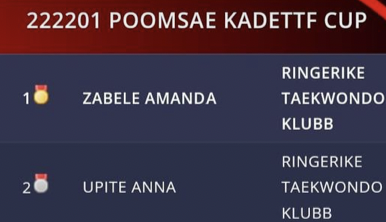

Innlegg
Gratulerer med pallplass på Online NC2

Dette er første gang Ringerike Taekwondo har deltatt i Online Poomse-konkurranse, og det gikk strålende!Fra klubben stilte Amanda Zabele og Anna Upite, og begge to fikk pallplass i kadettklassen. Amanda fikk gull og Anna fikk sølv, så gratulerer til dere begge!
Her er link til videoene til Anna om du ønsker å se:
Her er link til videoene til Amanda om du ønsker å se:
Det var en fin erfaring å ha med seg, og ikke minst veldig lettvint.